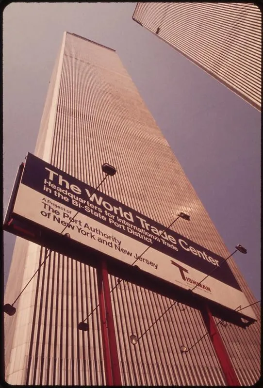

Independent historical research
Kaan
Karataş.
Independent Researcher / Istanbul
I research history through archives, documents, and personal testimonies.
World Trade Center Archive · 100 pages · testimonies from two 9/11 survivors and a historian · being added to Columbia University's oral history collections


Lower Manhattan, before 2001 — line study
A NOTE ON MY WORK
Independent research with a focus on historical memory, documentary records, and the people behind them.
SELECTED PROJECT
World Trade Center
Archive
A documentary history of the World Trade Center, its architecture and everyday life, and the events of September 11, 2001.
View the archive02 / WRITING
Something
More
Personal essay ↗
03 / ABOUT
Researcher
Profile
Read more ↗
04 / CONTACT